Driven with Playwright across 9 surfaces at mobile (390×844) and desktop (1280×900). Automated WCAG 2.1 A/AA checks via axe-core 4.10 + custom heuristics (touch targets, focus, overflow, heading order). Date: 2026-06-19.
Every surface re-run after the fixes now reports 0 axe violations (wcag2a/aa/best-practice):
| Surface | Before (axe) | After |
|---|---|---|
| Today / Trends / Body | 1 critical (tab aria) | ✅ 0 |
| Train | 1 critical + 1 serious | ✅ 0 (incl. selected-card highlight) |
| Add-food sheet | 1 critical + 9 contrast | ✅ 0 · focus now moves into dialog & restores on close |
| Settings sheet | 2 critical + 10 contrast | ✅ 0 · file input labelled, focus trapped |
| History | 2 critical (43 nodes) + 2 serious | ✅ 0 · grid row/cell hierarchy + ring alt |
*Moderate (focus trap + 44px .v2-btn--sm) implemented. Touch targets: the primary small-button style is now 44px; a few inline text/icon buttons remain 30–39px (skip-link, water/weight inline edits, footer) — acceptable (WCAG 2.5.8 AA min is 24px) and improved from 16–17px.
h1 per surface, no skipped heading levels.role="dialog", aria-modal="true", and a resolving aria-labelledby; Esc closes them.aria-labels.Severity = accessibility/usability impact. critical blocks AT users or breaks semantics · serious WCAG AA fail · moderate friction · low polish.
Each tab button has aria-controls="v2-tabpanel-{name}" but no element with that id (or role="tabpanel") is rendered. Screen readers announce a broken relationship.
id="v2-tabpanel-{name}" + role="tabpanel" + aria-labelledby back to the tab, or remove aria-controls if the panel can't be marked. See tab-bar.component.ts.The calendar uses role="grid" with day-<button>s as direct children — no role="row" wrappers or role="gridcell". ARIA grid semantics are invalid, so grid navigation/announcements break.
role="row" and each day in role="gridcell", or drop the grid roles entirely (a labelled list of day buttons is valid and simpler). See history.component.ts.<input type="file" class="sr-only"> has no label/aria-label/title. Low real-world impact (a visible labelled button triggers it), but it's a flagged AA failure.
aria-label="Import CSV file" to the hidden input. See settings-data-section.component.ts.--v2-ink-muted: #7a7268 measures 4.43:1 on the light background (#faf7f2) — just under the 4.5:1 AA minimum — and only 3.45:1 on the accent-soft card tint (#f3d6cc). It's used on captions, the "/ 120g" goal text, day-cell numbers, and field labels like "Calories *" / "Protein (g)".
--v2-ink-muted to ≈#6e665b (~5:1 on paper) clears AA everywhere; also re-check the dark-variant #847a68. Single edit in styles-v2.css:26.The calorie ring SVG has an image role but no <title>/aria-label in this context, so its value isn't announced. (On Today the ring does carry "Calories: 0 of 2000" — so the fix is to make that consistent.)
aria-label/<title> to the ring component (e.g. "{day}: {kcal} of {goal}"). See the shared ring used by history/day-summary.When a sheet opens, keyboard focus stays on the trigger button behind the overlay. Keyboard/AT users must tab through the whole page to reach the dialog, and focus can escape behind it. Esc-to-close already works.
ui/sheet.component.ts so every sheet inherits it.The small-button style .v2-btn--sm renders ~36px tall (New, Start, Manual/Search/Photo/Barcode, water +250/+500/+1L, language, sign-out, settings toggles). Inline text-buttons are 16–17px ("manage", "Started earlier?", footer privacy/terms/status/contact). Calendar day cells are 41px. WCAG 2.5.5 / platform guidance want ≥44px.
.v2-btn--sm min-height to 44px (keep visual size via padding if needed) and give inline text-buttons a larger hit area (padding / min-height). Space the footer links apart.Content is a single narrow column; on wide screens there's large dead space and the floating + FAB sits far to the right, detached from the column. Acceptable for a mobile-first PWA but feels unfinished on desktop.
Future / other-month day numbers and the S-M-T-W-T-F-S weekday headers are near-invisible against cream. Below the calendar is a large blank gap with no selected-day preview or empty state.
privacy · terms · status · contact render at ~17px tall with small gaps — easy to mis-tap on mobile.
Click any screenshot to enlarge. Captions list what was found on that surface.
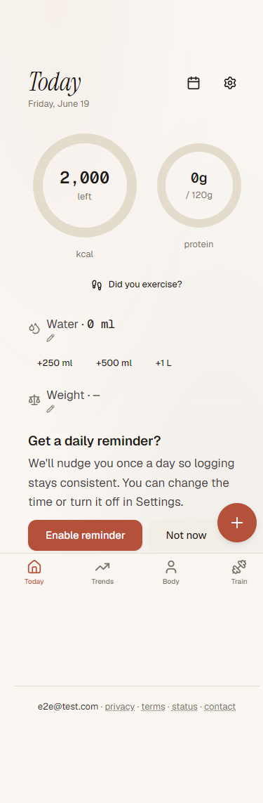
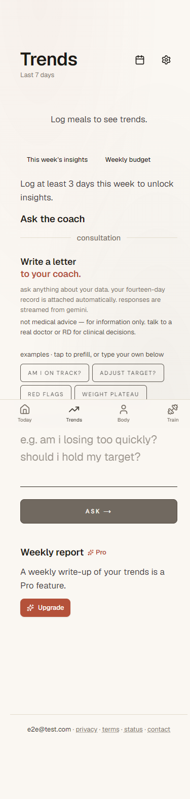
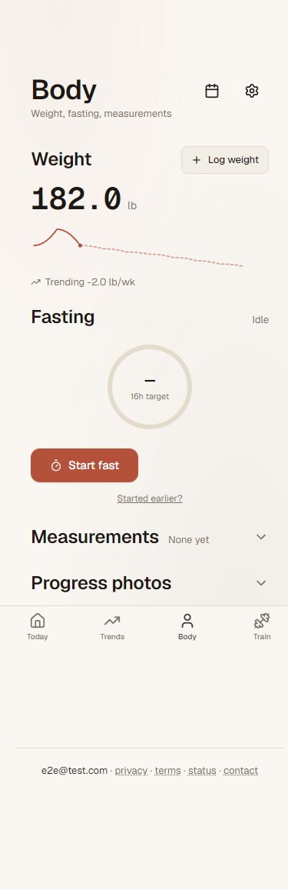
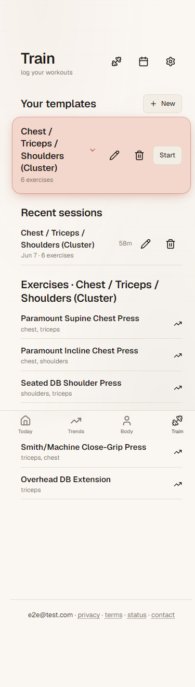
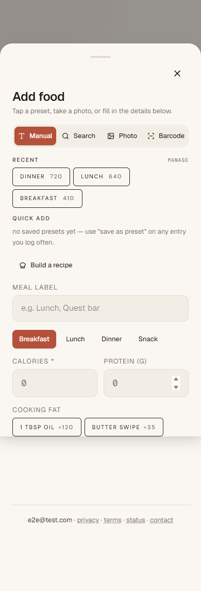
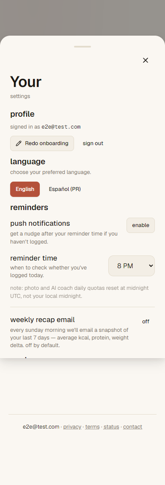
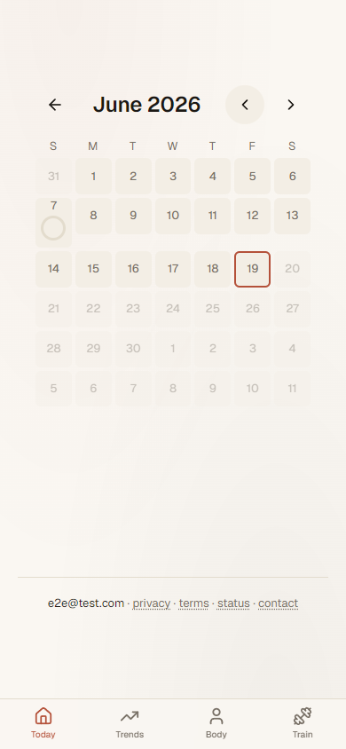
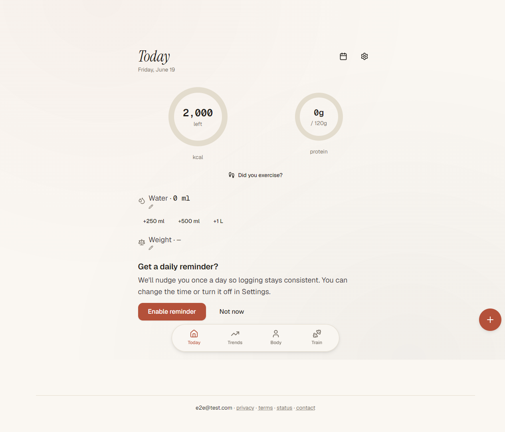
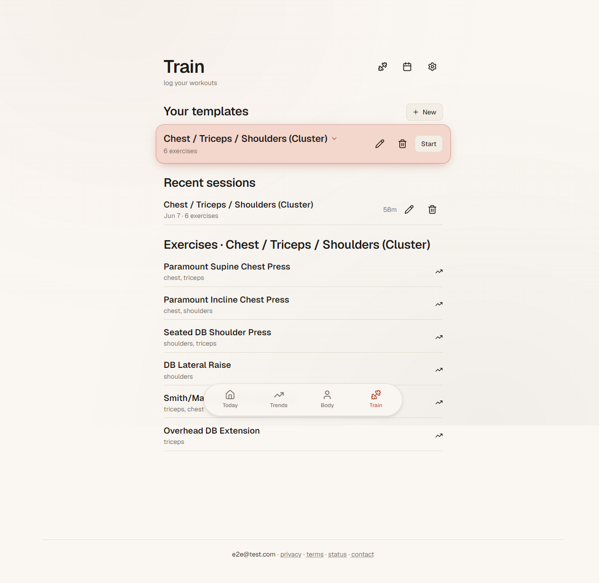
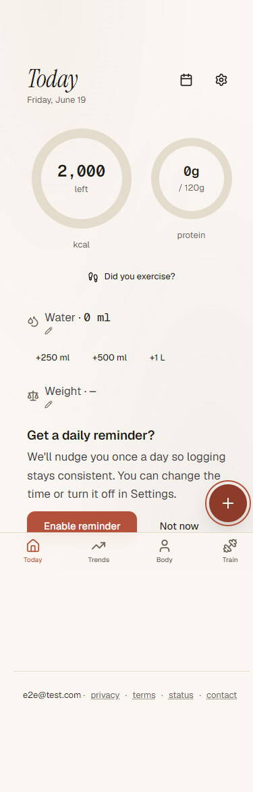
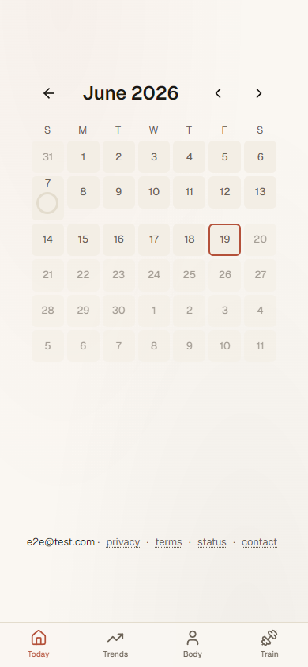
| # | Item | Effort | Payoff |
|---|---|---|---|
| 4 | Darken --v2-ink-muted token | ~1 line | Clears AA contrast app-wide (most nodes) |
| 1 | Fix/remove tab aria-controls | Small | Removes a critical on every screen |
| 2 | Calendar grid row/cell roles | Small–med | Removes 43 critical nodes |
| 6 | Focus trap in ui-sheet | Medium | Fixes keyboard UX for all modals at once |
| 7 | 44px min on .v2-btn--sm + text-buttons | Small | Touch ergonomics across the app |
| 3,5 | File-input label · ring aria-label | Tiny | Closes remaining AA flags |
| 8–10 | Desktop layout · history polish · footer spacing | Optional | Visual refinement |